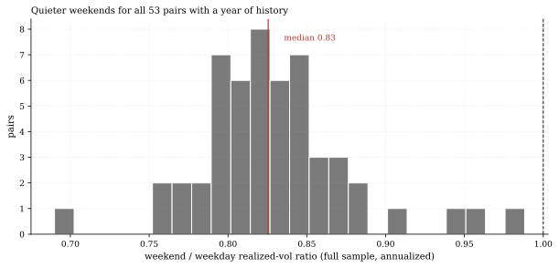
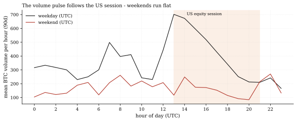
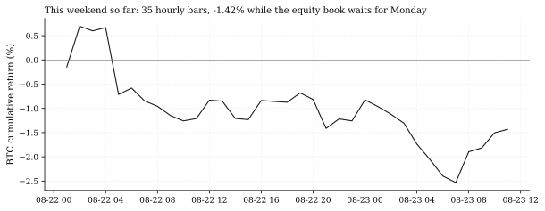

The one-paragraph version. While the equity book waits for Monday, the crypto book has already printed 36 straight hourly bars this weekend (35 return bars) - and what it prints is quiet. On our 58-pair OKX universe, weekends are a measurably calmer regime, not a wilder one: BTC's last-90-day weekend realized volatility runs at 0.55x its weekday level, weekend hours carry just 15.6% of recent volume despite being 28.6% of the week, and every one of the 53 pairs with at least a year of history - majors and longtails alike - shows lower full-sample weekend volatility than weekday, median ratio 0.83. The folklore of thin, violent crypto weekends gets the thin part right and the violent part wrong.
How we worked this problem
The 12-hour data cycle refreshed the OKX book to 2026-08-23 11:00 UTC (58 USDT pairs, hourly), while the equity panel's last session is 2026-08-21 - it is Sunday, and this is the one window where the house's crypto data is strictly fresher than everything else. We split every hourly return and volume bar since 2019 into weekend (Saturday-Sunday UTC) and weekday buckets, computed annualized realized volatility and volume shares for BTC over the full sample and the last 90 days, then repeated the weekend/weekday volatility ratio for every pair with at least one 24/7 year of bars (53 of 58; the rest are recent listings) over each pair's full history since listing. We also measured whether the book tightens or loosens against BTC on weekends (average hourly correlation), and ran one external claim through our own data: that negative crypto weekends predict negative equity Mondays.
The data audit
| Source | Coverage | As-of | Role |
|---|---|---|---|
data/ccxt_1h/*_okx1h.parquet | 58 USDT pairs, hourly close/volume, ragged listings (BTC since 2019-01) | 2026-08-23 11:00 UTC | all weekend/weekday statistics |
data/cache_panel_2007_2026.parquet | SPY daily close | 2026-08-21 | the Monday-after-weekend cross-check |
Weekend = Saturday-Sunday UTC bars; volatilities annualize with the 24/7 hourly convention (sqrt of 8,760). The funding cache is not used in this note (its 2026-07-31 as-of would add nothing to a calendar-structure question).
The external read
The weekend effect has a real literature. The claim we chose to test - "negative weekend crypto returns significantly predict Monday equity declines, while positive weekend returns have no effect" - comes from Mourey (2025), Finance Research Letters (SSRN version). Practitioner writing adds the mechanism story: lower weekend volume means fewer institutional participants and - in the folklore - "increased price sensitivity" (Quantified Strategies); academic work also links liquidity volatility to expected crypto returns (Leirvik 2022) and asks whether momentum itself behaves differently on weekends (ACR Journal).
Exhibits
Exhibit 1 - quieter, not wilder: 53 for 53. The full-sample (since-listing) weekend/weekday volatility ratio is below one for every pair with a year of history - median 0.83, full range 0.69 to 0.99. BTC itself has gone further recently: 25.6% annualized on weekends versus 46.6% on weekdays over the last 90 days (ratio 0.55), compared with 50.4% versus 66.2% full-sample (ratio 0.76). Whatever thinness weekends bring, it does not translate into larger price moves.

Exhibit 2 - the volume pulse follows the US session. Mean BTC volume per hour over the last 90 days, weekday versus weekend: weekday volume breathes with the US equity session (13:00-21:00 UTC shaded) and weekends run flat and low. Weekend hours are 28.6% of the week but carried only 22.7% of all BTC volume since 2019 - and just 15.6% in the last 90 days. The institutions, as the practitioner story goes, really do step away; the market simply does less. Against BTC, the book also loosens slightly on weekends: average hourly correlation 0.58 weekend versus 0.65 weekday (last 90 days).

Exhibit 3 - the weekend in progress. As of the 11:00 UTC bar, this weekend has printed 35 hourly return bars with BTC down 1.42%, running at 35.2% annualized volatility - right in line with the quiet-weekend regime, and no US equity print until Monday.

The cross-check - directionally confirmed, not significance-tested. Mourey's asymmetry shows up in our sample once weekends are measured as weekends: across 398 complete weekends since 2019 (187 with negative BTC weekend returns), the Monday after a negative weekend averaged -0.044% for SPY versus +0.179% after positive weekends, and Mondays were down 42.8% of the time after negative weekends versus 40.3% after positive ones. The direction matches the published claim; our sample carries no formal significance test, so we report it as consistency, not confirmation. (The first draft of this note computed the cross-check on weekly rather than weekend returns and concluded the opposite; the editor caught the mismatch and the corrected computation is what you read here.)
So what - opportunities
- Execution scheduling is a free lunch in sample: if weekends run at
- The quiet-weekend regime is a monitoring diagnostic. A future weekend
- For risk models: weekend risk on a 24/7 book should not be
0.55x BTC weekday volatility (last 90 days) with a 0.83 full-sample median across the book and roughly a fifth of the volume (22.7% since 2019; 15.6% last 90 days), rebalances and roll activity that must happen anyway have a calmer window - though the same thin volume caps the size that can be moved at that calm.
that breaks the pattern - ratio rising through 1.0 with volume share jumping - would be a clean, pre-registerable stress signal for the crypto book, and it is the kind of call our Track Record can grade.
extrapolated from weekday vol; a flat 24/7 scaler misstates weekend risk by roughly the inverse of these ratios.
So what - risks
- Thin bookends: these are unconditional full-sample and 90-day
- UTC weekend definition: Saturday-Sunday UTC is not everyone's
- Listing raggedness: 5 of 58 pairs lack a full year of bars and are
statistics. A quiet regime is not a guarantee - single weekend dislocations (exchange outages, macro shocks landing on a Sunday) are exactly when the thin-volume folklore does come true; the ratio's range floor of 0.69 says nothing about the tail of any one weekend.
weekend; Asia's Sunday evening session lands inside our weekend bucket. The convention is disclosed and consistent across exhibits.
excluded from the cross-section; the 53-pair result is not the full book.
Machinery: how this piece was produced
articles/2026-08-23-crypto-weekends-58-pairs/analysis.py reads the 58 pair files plus the daily panel, computes every number above into assets/numbers.json, and renders the three figures (SVG + PNG twins). Weekend BTC returns for the Monday cross-check are weekend-only hourly log-returns (Saturday-Sunday UTC) grouped per weekend (week-ending-Friday buckets, each holding exactly one Saturday-Sunday pair; in-progress weekends dropped); the "Monday" is the first SPY session in the four days after each weekend's Sunday.
Reproduce with: ``bash .venv/Scripts/python articles/2026-08-23-crypto-weekends-58-pairs/analysis.py ``
Limitations
- OKX USDT pairs only - one venue, one quote currency; weekend structure on
- Volume is venue-reported units, not dollar volume (pairs quote in the
- The 90-day window overlaps the low-volatility regime of a record-high
- 398 weekends is a modest sample for a Monday-prediction test and carries
other venues or coin-margined books may differ.
base asset); shares and profiles are internally consistent but not dollar-weighted.
market; the full-sample ratio (0.76) is the more conservative read.
no formal significance statistic; our direction-consistent result is weaker evidence than the published claim, not equivalent evidence.
Sources - external reading list
| Claim | Source |
|---|---|
| Negative weekend crypto returns predict Monday equity declines (asymmetric) - tested here, direction consistent (no significance test) | Mourey 2025, Finance Research Letters / SSRN |
| Lower weekend volume, fewer institutional participants (folklore: "increased price sensitivity" - the sensitivity half is contradicted by our Exhibit 1) | Quantified Strategies - Weekend Effect in Bitcoin |
| Liquidity volatility and expected crypto returns | Leirvik 2022, Finance Letters |
| Weekend-dependent momentum | ACR Journal - Weekend Effect in Crypto Momentum |
okx-ccxt-fetch; pandas; matplotlib